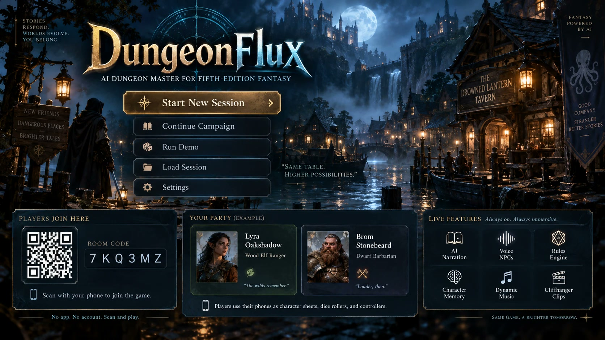
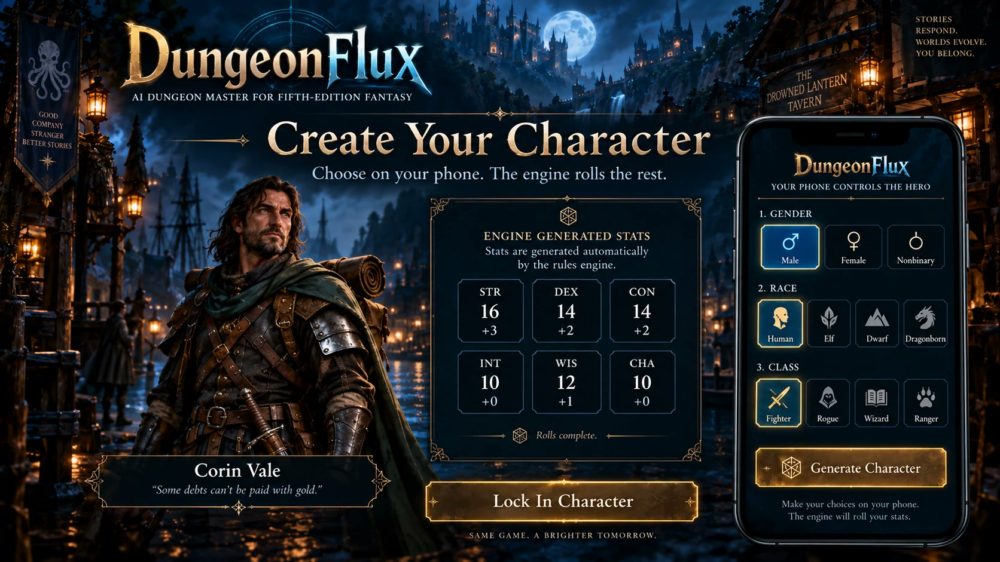
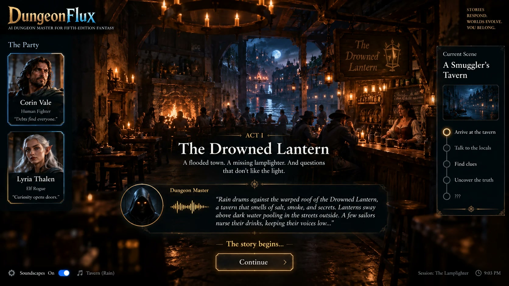
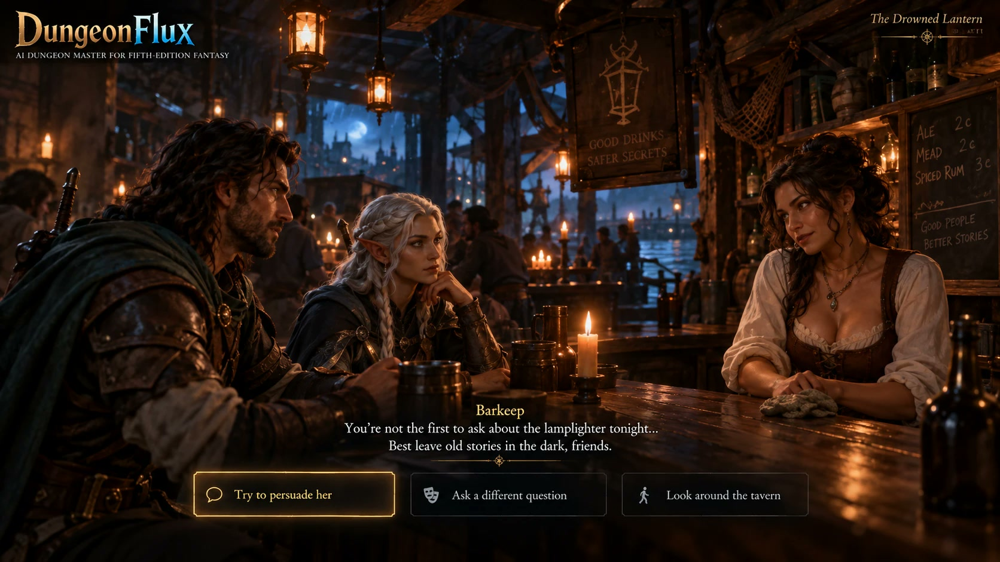
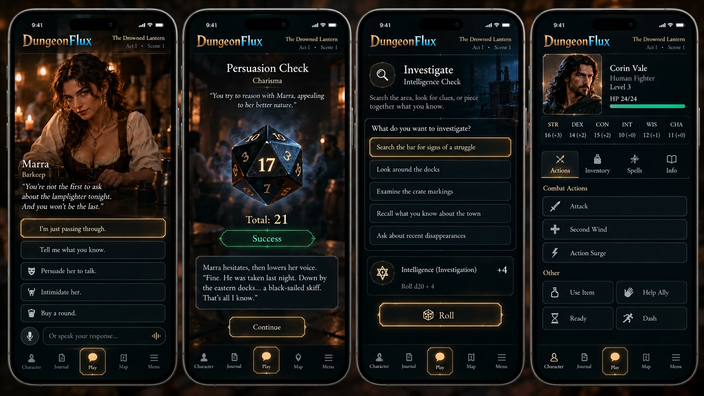
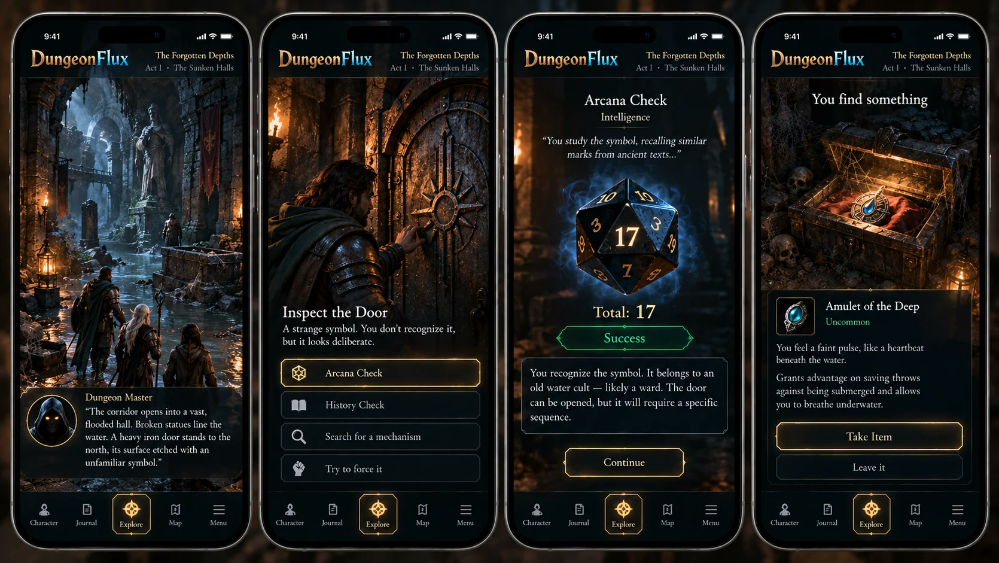
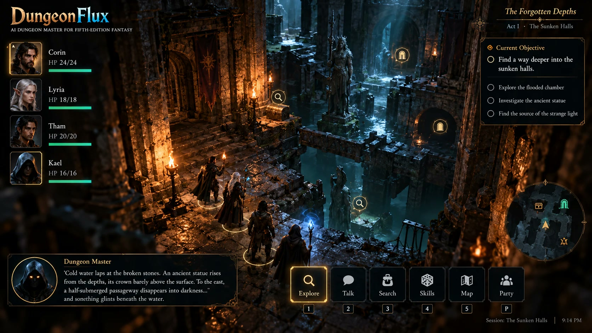

The engine decides
The rules engine rolls every die and records every result. The AI receives the outcome and narrates it, and nothing it says can change a result the engine has set.
Built for ShellHacks 2026
An AI dungeon master for a table of friends.
The TV is the table. Every phone is a character sheet. The AI writes the story, narrates it aloud, and plays everyone the party meets, while a rules engine rolls every die and decides every outcome.

An AI can run a real table for real friends if the work is divided correctly. Most AI game masters give one model both jobs, and the same three problems follow: it forgets the state of the world, it lets players do anything, and it invents numbers. DungeonFlux splits the jobs.
The AI narrates results the engine has already decided.
A group of friends in one room. A laptop, or the TV it is plugged into, is the dungeon master's screen. Everyone else holds their phone.
The TV shows a QR code and a room code. Each player scans it and takes a seat. No account and no app to install.
On the phone you choose a species and a gender and tap once. The engine rolls the rest: a class, ability scores, and skills, and the result is always a legal character. The dungeon master names them and gives them a backstory hook, and their portrait appears on the TV beside the rest of the party.

In its own voice, with your characters standing in the scene art. The demo opens on a smugglers' tavern in a flooded river town, on the night the town's lamplighter disappeared.

When you want to talk to someone, you speak. The barkeep answers in a voice of her own, with her own manner and her own reasons for being careful. Push her, and the phone offers a Persuasion check with the odds shown. The die rolls on the TV, and the result decides what she says next.

What you can do right now, with the modifier and the odds beside each roll. Nobody stops the game to ask what they're allowed to do.


Music, ambience, and effects run underneath. Short video clips mark the big moments, and they feature the characters you just made.
DungeonFlux is being built in 24 hours at ShellHacks 2026 and shown live with two players. This is the plan for the three minutes.
Both players are already joined from the QR code on the TV. Each taps Ready, and the host starts the session.
Both seats at once: a species, a gender, and “Roll my hero”. The engine rolls class, abilities, and skills; the dungeon master names each hero; two portraits resolve on the TV.
A short establishing clip crossfades into the scene: the tavern, both heroes, and Mother Vell behind the bar. The dungeon master narrates.
Player one taps “Talk to Mother Vell” and speaks. She deflects, in her own voice. The phone offers Persuade +4 vs DC 10, 75%. The d20 rolls on the TV. On a success she reveals where the lamplighter was taken, a secret she was not given until the roll succeeded.
Player two tries to leave. A stranger arrives with a letter from someone in that character's own backstory. The TV shows the steering decision as it happens: personal hook, and whose.
The stranger was followed. A drowned thrall breaks through the door and the tavern becomes a Gaussian-splat battlefield with a movement grid. Each player taps Attack; the hero walks the path, the d20 rolls on the TV, and hit points move. The fight ends when the thrall falls, or on its second turn, when the tower bell tolls and calls it away.
A closing clip of both players' characters, generated during the demo, then the end card.
The rules engine rolls every die and records every result. The AI receives the outcome and narrates it, and nothing it says can change a result the engine has set.
Each character the AI plays gets only its own knowledge. A secret is withheld from that character entirely until a player earns it, so it can't slip out early.
The dungeon master knows where the plot is heading and funnels the table toward it with material the players supplied: their backstories and the consequences of their choices. Wander off, and someone from your past may turn up with a reason to come back. You still choose how you get to the ending.
Art, music, and video are generated as soon as their ingredients exist, ahead of the moment that needs them. If a clip is late, a prepared fallback plays and the game keeps moving.
Go from end to end, with one small JavaScript exception for the 3D battlefield. The architecture below is the plan being built this weekend.
Go compiled to WebAssembly with GoWebComponents. Scene art, portraits, dice, subtitles, and the steering read-out.
The same Go-to-WebAssembly stack. Legal moves, rolls with odds, the character sheet, and push-to-talk.
A Gaussian-splat tavern rendered with PlayCanvas, with a movement grid and the heroes on it. The only JavaScript in the project.
gRPC over WebSocket with GoGRPCBridge carries everything between the screens and the server, including live microphone audio.
Lobby, creation, scene, and combat are explicit machines, so every screen knows exactly which phase the table is in.
Pure and deterministic: state and one event in, new state and effects out. Seeded dice, no clock, no I/O. Replaying the log reproduces the session exactly.
The event log, runs, and generated assets. The log is the source of truth.
Ports and adapters. Every model sits behind an interface with a fallback chain, so swapping a vendor is one adapter and one config line.
OpenAI for live lines, Google Gemini for pre-rendered lines, Anthropic Claude as the spoken-line fallback.
ElevenLabs for speech-to-text, character voices, sound effects, and music.
OpenAI image generation for portraits; Seedance for short video clips from a first frame.
World Labs turns a painted still of the tavern into a 3D Gaussian-splat world.
Rules come from the System Reference Document 5.2.1, published under CC-BY-4.0.
The demo is one scene. The plan beyond it is the full game.

Multiple acts written around the characters the players create, with a cast and places that stay consistent as the story grows.
Initiative, spells, reactions, and conditions, all driven from the phone, which still shows only the options that are legal on that turn.
The people you've met remember what was said and promised, and each session can open with a recap of the last.